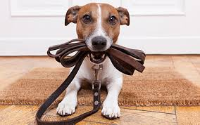

-
Agility Skills & Games - $185
Level 1 class that introduces dogs to some of the agility equipment and uses games to build a better relationship with your dog so that you can play the game of agility.
-
Advanced Agility - $185
A class great for continuing work from Agility Skills & Games. This class focuses on handling, continuing work on agility equipment, weave poles, and contacts.
-
Puppy Skills 1 - $185
A great class for puppies from 12 to 16 weeks. This class focuses on building foundation skills such as sit, down, recall, and impulse control as well as socialization.
-
Advanced Puppy Skills - $185
A class great for continuing work from Puppy Skills 1. This class focuses on building duration and working on distractions. Skills that will be worked on - stays with distractions, greeting with dogs and people, recalls with distractions, heeling, leave it with distractions, send to a mat, and impulse control as well as socialization.
-
Family Manners 1 - $185
This is a foundation class that is perfect for the 6 month or older puppy who needs to work on basic skills that all dogs should know. Sit, down, come, stay, leash walking, leave it and drop and impulse control exercises are worked on in class as well as handling and discussion of typical problems.
-
Advanced Skills 2 - $185
A class great for continuing work from Family Manners 1. This class focuses on building duration and working on distractions. A few of the things that will be worked on - stays with distractions, greeting with dogs and people, recalls with distractions, heeling, leave it with distractions, send to a mat.
-
C.L.A.S.S. B.A., M.A. Levels - Canine Good Citizen - $185
Canine Life and Social Skills is a program to create real-life, practical skills such as walking nicely on a leash and being polite in social situations. Check out www.mydoghasclass.com for more information about curriculum. This class is geared toward a dog that has already taken one training class and is looking at moving on to more training of skills with distance, distractions and duration.
-
Pullers Anonymous - $95 for 3 classes
These three classes are all focused on walking with your dog. We will work on calls to the front, about turns, polite greeting with dogs and people, and what to do with distractions.
-
Rally Obedience
This class focuses on preparing you for AKC Rally Obedience competitions. Exercises are broken down each week and a course is set up for students to run through.
-
Recallers - $95
This class will build a fast and reliable recall but also learn why your dog may not always come when you call. Learn how to make recalls fun for your dog.